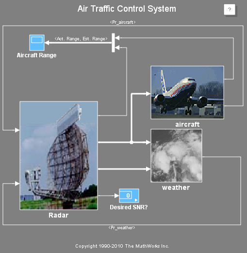
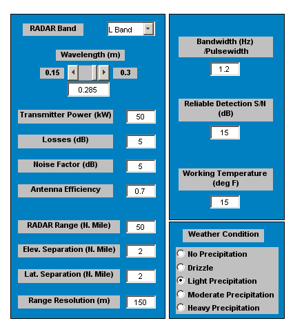
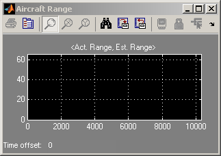

航空交通管制レーダーの設計
このモデルは、レーダー レンジの式に基づいた航空交通管制 (ATC) レーダーの概念的なシミュレーションです。
目次
モデルの説明
パラメーターの変更とその値の決定がしやすいように、このモデルには GUI が用意されています。 レーダーと気象のパラメーターをこの GUI から変更できます。 シミュレーション中、これらのパラメーターの影響をスコープ ディスプレイで確認できます。このディスプレイには、実際の航行範囲が黄色で表示され、レーダーから得られた推定航行範囲が赤紫で表示されます。 その他に確認できる出力としては、計算上の S/N 比 (SNR) と理想的な SNR の比較があります。 理想的な SNR も GUI から指定します。 結果は、表示ブロックに 1 (SNR >= 理想的な SNR) または 0 (SNR < 理想的な SNR) として表示されます。
このモデルでは Simulink® と Stateflow® が使用されます。このモデルは、レーダー、航空機、気象という 3 つの主要なサブシステムに分けられます。
サブシステムの使用には次の 2 つの利点があります。 第 1 に、モデルが整理されて理解しやすくなり、作業をサブシステムで分けて複数の技術者に割り当てることができます。 第 2 に、"check SNR" というラベルの付いた Stateflow マシンでは、SNR の計算値と理想的な SNR を比較するロジックが実行され、この比較に基づくデータが出力されます。
シミュレーションを実行し、スコープ上の出力からレーダーで航空機を捕捉できるかどうかを判断できます。 GUI では、レーダーと気象のパラメーターを変更できます。航空機が "見える" 範囲は、これらのパラメーターで変わります。
open_system('aero_atc'); set_param('aero_atc','simulationcommand','start');  
bdclose('aero_atc')
設計問題
レーダー システムは特定の目的に合わせて設計されるものであり、他の用途にも効果的に使用できるということはまずありえません。 パラメーター値は、新しいレーダー仕様ごとに新たに計算する必要があります。 ある用途に使用するレーダーを設計する場合、その設計を形作るパラメーターは多数にのぼります。 このようなパラメーターの中には、顧客仕様に含まれているか、または顧客仕様から論理的に得られるものがあります。 また、設計技術者の最良の判断のもとで任意に選択されるものもあります。 これは、システム設計の最初の近似解です。 そこから設計パラメーターに何度も修正を加えていった結果、最良の設計にたどり着きます。 顧客仕様に変更が生じた場合、設計プロセスを最初からやり直さなければならなくなることもあります。 設計方針は、こうしたパラメトリックな性質を持つことから、自動化に向いています。
aero_atcgui;
close('Air Traffic RADAR Design Parameters');
設計仕様
地上に設置する航空交通管制 (ATC) レーダーの概念設計に関心があるものとします。 潜在的な顧客仕様について見てみましょう。

これは、設計プロセスの基本となる顧客仕様の例です。 顧客 (おそらく FAA) はレーダー設計の基本要件をいくつか提示し、多くのパラメーター選択を設計技術者に任せます。
論理的に得られたパラメーターのいくつかは技術者の仮定に基づくものであり、最良の判断によるパラメーターを最適化するたびに再計算する必要があります。 このような問題はシミュレーションに向いています。 Simulink と Stateflow を使用することにより、設計技術者は解析を行い、モンテ カルロ テスト実行用の時変設計事例、 つまり航空機の断面と位置、気象の断面と位置を取得することができます。
設計プロセスで使用される MathWorks® 製品
MathWorks® 製品は、以下の点でレーダーの概念設計に適しています。

モデルは、顧客仕様、およびシステムを物理的に説明した方程式と共にレーダー域の方程式を使用して、MATLAB®、Simulink、および Stateflow で作成されます。 モデルでバッチ処理用の simコマンドを使用し、ロバスト性を検証するモンテ カルロ シミュレーションを実行して、最良の判断によるパラメーターをさまざまな条件、気象、航空機に合わせて最適化することができます。 その結果、最適化されたレーダー パラメーター一式が得られます。これらのパラメーターを使用して、完全なレーダー システムの詳細なブロック線図モデルを作成し、Signal Processing Blockset™ を使用して Simulink でシステムをさらに詳しく解析できます。